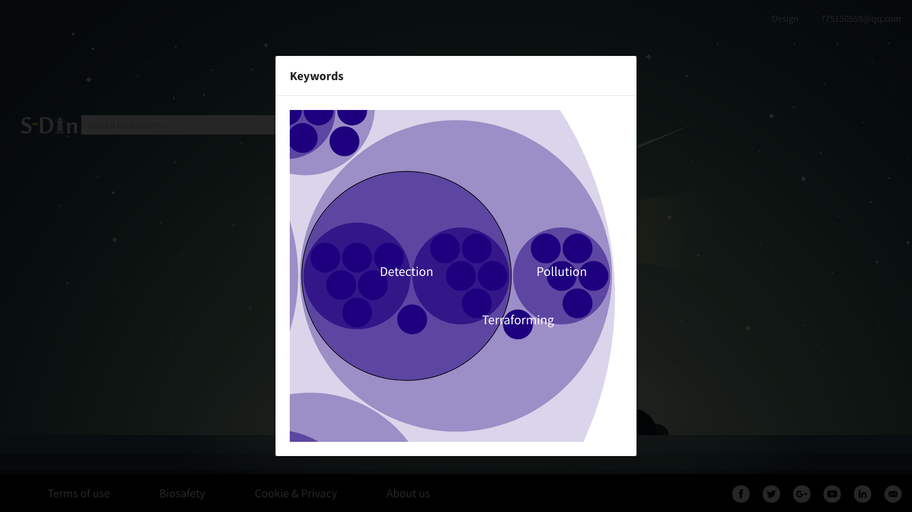
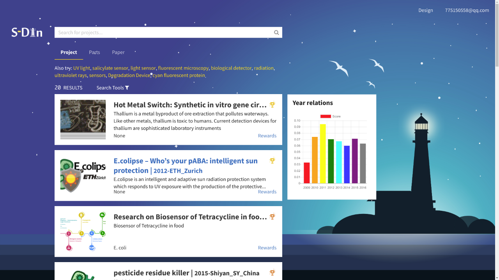
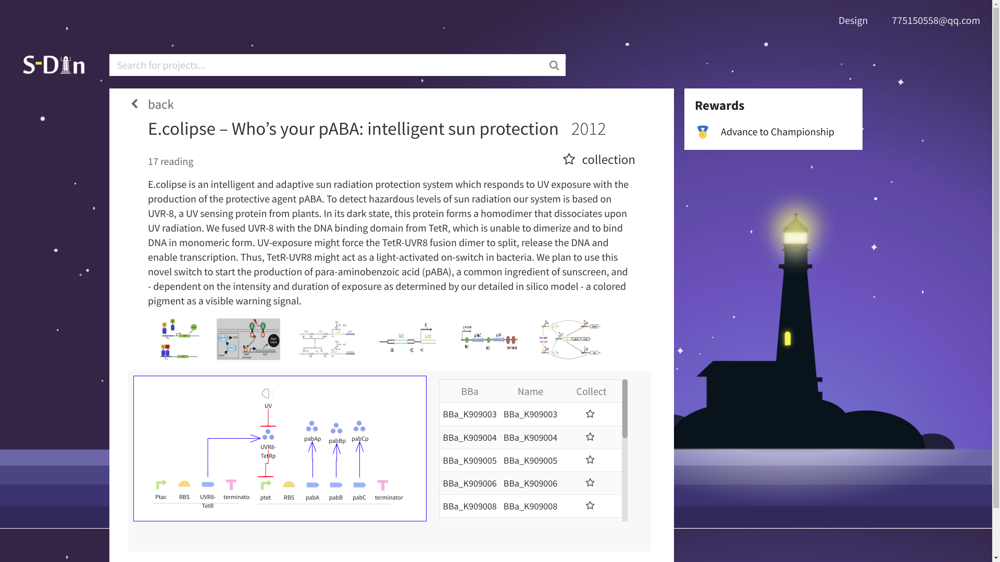
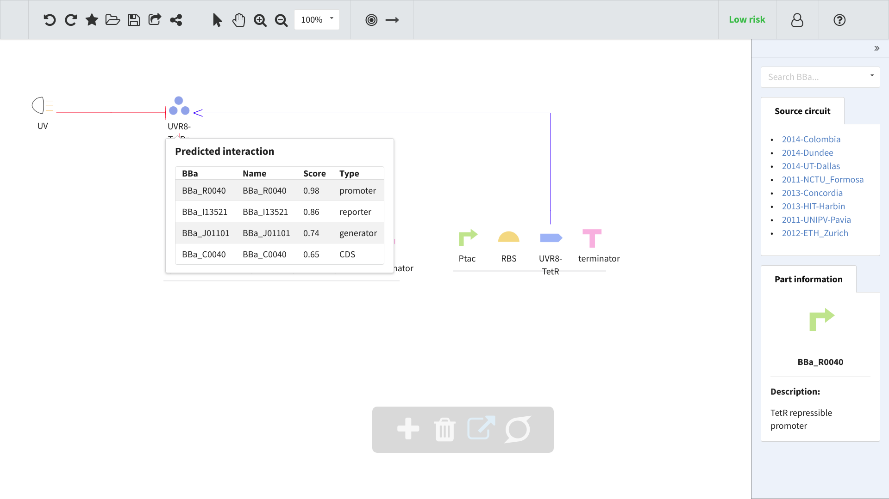
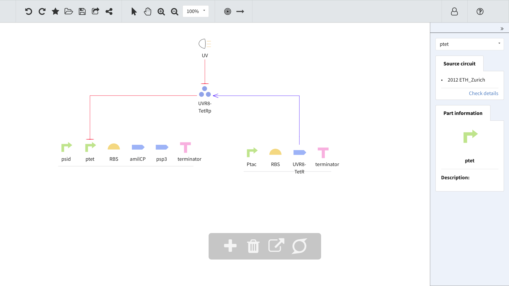

Design our circuit
1. Set up your interested research field: After log in, we sat our interest. Because we were curious about UV detection, so we chose DETECTION

2. Browse on S-Din: When surfing on S-Din, we found that UV detection is a hot/not a hot area....

3. Search the previous project: Standing on the shoulders of giants, we wondered predecessors will give us some ideas. We searched for ‘UV detection’ . With data analysis and XXX score, we found ETH_Zurich 2012, and marked it.

4. Intelligent recommendation: Based on the interaction database, S-Din recommended us to use a device of Colombia 2014. After browsed its information, we decided to take the advice of S-Din.

5. Edit the circuit: We deleted extra part of ETH_Zurich, because we just decided to use the UV sensor.The surveillance system shows that the safety level of our circuit is low risk. (Upper right corner)

6. The plasmid design: After finished our design, we click on the bottom, then the design drawing of our plasmid came out. So we had a system when detect UV will produce AmilCP, a kind of blue protein.